Now that you’ve got a handle on Python basics, we’re ready to being to learn the basics of analyzing data. We will focus on some of the basic ways to plot data in order to see patterns, and on descriptive statistics, which are numerical summaries of data.
In this chapter we will be using base Python, much of which we discussed in the previous chapter, along with the Matplotlib library to create plots of the data. In later chapters we will learn more advanced ways to visual data using Matplotlib and other data visualization packages.
By the end of this chapter, you should be equipped to take in lists of data, and create basic visualizations and summary statistics that can give insight into questions of interest.
3.1 An Example Dataset: The Bechdel Test Movies
In order to understand the descriptive statistics and plots discussed in this chapter, we will analyze data from the Bechdel Test dataset. This dataset, originally compiled and analyzed by FiveThirtyEight, examines movies based on whether they pass the Bechdel Test, along financial performance and other characteristics of particular movies.
The “Bechdel Test” is based on comic strip Dykes to Watch Out For written by Alison Bechdel and refers to the particular comic called “The Rule”. In this comic, a character describes three criteria movies must meet in order to pass, what is now called the “Bechdel Test”. These criteria are:
The movies must have at least two named women in it.
These women must talk to each other.
And what they talk about must be something besides a man.
Below we load in the data into a Pandas DataFrame and displays the first few rows of the data. We will discuss the Pandas package later in this book so for now you should ignore what this code is doing for now.
import pandas as pd# Read in the Bechdel movie data and remove all rows with missing valuesbechdel_df = pd.read_csv("https://raw.githubusercontent.com/fivethirtyeight/data/refs/heads/master/bechdel/movies.csv")# Get only the columns we are interested inbechdel_df = bechdel_df[["title", "year", "clean_test", "binary", "budget_2013$", "domgross_2013$", "intgross_2013$"]]# Remove rows with missing valuesbechdel_df = bechdel_df.dropna()display(bechdel_df.head())movie_titles = bechdel_df["title"].tolist()bechdel_status = bechdel_df["binary"].tolist()bechdel_reason = bechdel_df["clean_test"].tolist()budget_2013_dollars = bechdel_df["budget_2013$"].tolist()domestic_gross_2013_dollars = bechdel_df["domgross_2013$"].tolist()int_gross_2013_dollars = bechdel_df["intgross_2013$"].tolist()
title
year
clean_test
binary
budget_2013$
domgross_2013$
intgross_2013$
0
21 & Over
2013
notalk
FAIL
13000000
25682380.0
42195766.0
1
Dredd 3D
2012
ok
PASS
45658735
13611086.0
41467257.0
2
12 Years a Slave
2013
notalk
FAIL
20000000
53107035.0
158607035.0
3
2 Guns
2013
notalk
FAIL
61000000
75612460.0
132493015.0
4
42
2013
men
FAIL
40000000
95020213.0
95020213.0
The code above also extracts four lists from the Pandas DataFrame. We will analyze the data in these four lists throughout this chapter. These lists are:
movie_titles: The titles of the movies.
bechdel_status: Whether each movie passes or fails the Bechdel Test.
bechdel_reason: The reason a movie failed the Bechdel Test. The reasons are:
'ok': The movie passed the Bechdel test
'dubious': The movie’s Bechdel Test result is uncertain or ambiguous.
'men': The only conversations between women are about men.
'notalk': There are at least two named women, but they do not talk to each other.
'nowomen': There are fewer than two named women in the movie.
budget_2013_dollars: The production budget for each movie (in 2013 dollars).
domestic_gross_2013_dollars: The domestic box office gross for each movie (in 2013 dollars).
int_gross_2013_dollars: The international box office gross for each movie (in 2013 dollars).
We could have created these lists using the square brackets as we did in the previous chapter (e.g., budget_2013_dollars = [13000000, 45658735, 20000000, ...]). However, given that there are 1794 movies in each of these lists, entering this data manually would be very inconvenient.
Since these are just ordinary lists, we can use the list operations we discussed in the previous chapter. For example, we can extract a subset of elements from the list using slicing, and we can get the number of elements in the list using the len() function:
# print out the budgets of the first 5 movies in the dataprint(budget_2013_dollars[0:5])# print out the number of elements in the budget_2013_dollars list # (i.e., the number of movies in our data set)print(len(budget_2013_dollars))
From looking out the output, we can see that there are 1794 movies in our data set.
Importantly for our analyses, the data in four lists all ordered the same way such that information about particular movie is at the same index in all the lists. For example, the code below prints out information about the 11th movie in our list 1.
Create a variable called index_number that refers to the index number of a particular movie. Then modify the code above so that it print out information about the movie at the index that index_number is set to (e.g., if index_number = 10 it will print out information about the 11th movie).
Also, try to use f-strings, as discussed in the previous chapter, to print out the text that describes what each value refers to along with the value. For example, the output for the 11th movie should be:
index: 10
title: American Hustle
bechdel status: PASS
bechdel reason: ok
budget: 40000000
gross dollars: 148430908.0
Finally, explore the data at different index values to get a sense of what is contained in the data set.
index: 10
title: American Hustle
bechdel status: PASS
bechdel reason: ok
budget: 40000000
gross dollars: 148430908.0
3.2 Questions of interest
Before diving into the data, it’s very useful to have a clear idea of what questions we want to answer. This will guide our analysis and help us focus on the most relevant statistics and visualizations. From the Bechdel Test dataset, we might be interested in questions like:
What proportion of movies pass the Bechdel Test?
What are the most common reasons movies fail the Bechdel Test?
What are typical budgets of movies?
Is there a relationship between a movie’s budget and its domestic gross revenue?
These types of questions help to determine which statistics and visualizations to create, and how to interpret the results. Below we will explore how to answer these questions using descriptive statistics and visualizations.
TipExercise
What other questions could we ask about the Bechdel Test dataset? Think of at least two additional questions that could be answered using the data.
NoteSolution
Some additional questions we could ask about the Bechdel Test dataset include:
Which movie in the dataset had the highest domestic gross revenue?
How does the average budget of movies that pass the Bechdel Test compare to those that fail?
What is the distribution of domestic gross revenue for movies that pass versus those that fail the Bechdel Test?
3.3 Categorical and Quantitative data
Statisticians often divide data into two broad types: categorical data and quantitative data. Categorical data is data that can be sorted into groups or categories, such as gender, color, or type. In Python, categorical data is often represented as character strings.
Quantitative data, on the other hand, consists of numerical values that represent counts or measurements, such as age, height, or income. In Python, quantitateive data is almost always represented as integers or floating point numbers.
Recognizing the difference between these two types of data is important because it determines which statistical methods and visualizations are appropriate for analysis.
TipExercise
Looking at the lists bechdel_status, budget_2013_dollars and domestic_gross_2013_dollars, which contain list(s) categorical data, and which contain quantitative data?
NoteSolution
bechdel_status: categorical
bechdel_reason: categorical
budget_2013_dollars: quantitative
domestic_gross_2013_dollars: quantitative
What is a Statistic?
As we explore our data, we will often want to create numerical summaries of key features of the data. A statistic is a single number that describes or summarizes some characteristic of a dataset. For example, the average budget of the movies in the budget_2013_dollars list would both be a statistic. In the sections that follow, we will delve into the common statistics and plot types used for both categorical and quantitative data.
Visualizing data with Matplotlib
To visualize data we will use the pyplot module in the Matplotlib library. As we discussed in the previous chapter, to use a library we first need to install it (if it is not already installed). Once the library has been installed (which we only need to do once), we can load using an import statement. To use Matplotlib it is standard practice to import the pyplot module into the name plt using the following code.
import matplotlib.pyplot as plt
Once this module has been imported, we can access functions within the module. For example (and as we discuss in more detail below) we can create bar graphs using plt.bar() and pie charts using plt.pie().
3.4 Categorical data
Categorical data, as we’ve learned, deals data that falls into different groups. Now, let’s explore how we can summarize and visualize this type of data to draw meaningful insights.
3.4.1 Statistics for summarizing categorical data
The most common way to summarize categorical data is by counting how often each category appears.
3.4.1.1 Frequency Tables
A frequency table is a simple table that shows each category and the number of times it appears in your dataset (its frequency).
Let’s consider our bechdel_reason list, which contains the reason each movie passed or failed the Bechdel test. To create a frequency table, we can count how many movies fall into each category: 'ok', 'dubious', 'men', 'notalk', and 'nowomen'. Python’s list.count() method is handy for this. For example, if we want to count how many movies failed the Bechdel test because there weren’t two named women in the movie we could use bechdel_reason.count("nowomen").
To create a full frequency table, we just need to count how many items there are in each of the category levels. We can then store these results in a list:
Let’s consider our bechdel_status list that contains whether a movie passed the Bechdel test. To create a frequency table, we can count how many of the movies passed the Bechdel test and how many failed. Python’s list.count() method is handy for this:
TipExercise
Use Python code to calculate the frequency table for the number of movies that passed and failed the Bechdel test.
NoteSolution
num_passed = bechdel_status.count("PASS")num_failed = bechdel_status.count("FAIL")# put the resulting numbers into a list to print them[num_passed, num_failed]
[794, 982]
Status
Frequency
PASS
784
FAIL
982
Total
1776
3.4.1.2 Proportions
While frequencies are useful, sometimes we want to know the proportion (or relative frequency) of each category. A proportion is the fraction of the total dataset that each category represents.
You calculate it by dividing the frequency of a category by the total number of data points. We can do this in Python using:
Use Python code to calculate the frequency table for the number of movies that passed and failed the Bechdel test.
NoteSolution
prop_passed = bechdel_status.count("PASS")/1776prop_failed = bechdel_status.count("FAIL")/1776# put the resulting numbers into a list to print them[prop_passed, prop_failed]
[0.44707207207207206, 0.5529279279279279]
Status
Frequency
PASS
0.447
FAIL
0.553
Total
1
3.4.2 Visualizing categorical data
Visualizations can make the patterns in categorical data much easier to grasp than just looking at numbers. Bar graphs and pie charts are common choices for visualizing categorical data
3.4.2.1 Bar graphs
A bar graph is a chart that presents categorical data with rectangular bars. The height (or length if horizontal) of each bar is proportional to the frequency or proportion of the category it represents.
We can create bar graphs in Python using Matplotlib’s plt.bar() function. This function takes two arguments:
a list of category names (x-axis labels)
a list of counts or frequencies for each category (y-axis values)
For example, to plot the reasons that movies failed the Bechdel test, we can create a list of strings called reason_names which has all the names of the reasons why movies passed or failed the Bechdel test. We can then use this list, along with the reason_counts list we created above, to create the bar graph:
# import the pyplot module to plot the dataimport matplotlib.pyplot as pltreason_names = ["Didn't talk", "Talked men", "<2 women", "Dubious", "Passed"]plt.bar(reason_names, reason_counts);
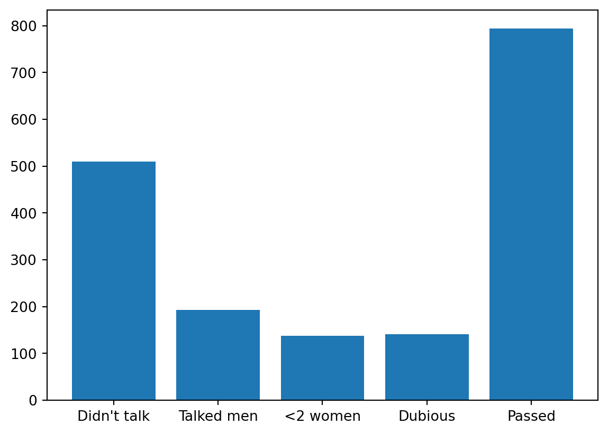
As we can see, the largest category is movies that passed the Bechdel test, followed by movies that failed because there weren’t too women in the movie who spoke to each other about something other than a man.
Note: when we call Matplotlib functions, we often end each function call with a semicolon (;). This is optional in Python, but in Jupyter notebooks, adding a semicolon at the end of a plotting command suppresses the extra output (such as the matplotlib object representation) which keeps the output cleaner by displaying only the plot.
3.4.2.2 Pie charts
A pie chart is another statistical graphic that can be used to display proportions. In a pie chart, a circle is divided into slices, where the arc length of each slice (and consequently its central angle and area), is proportional to the proportion of data points in each category.
We can create a pie chart using Matplotlib’s plt.pie() function. Let’s create a pie chart displaying the proportions of reasons why movies did not pass the Bechdel test using the reason_counts list we created above.
plt.pie(reason_counts);
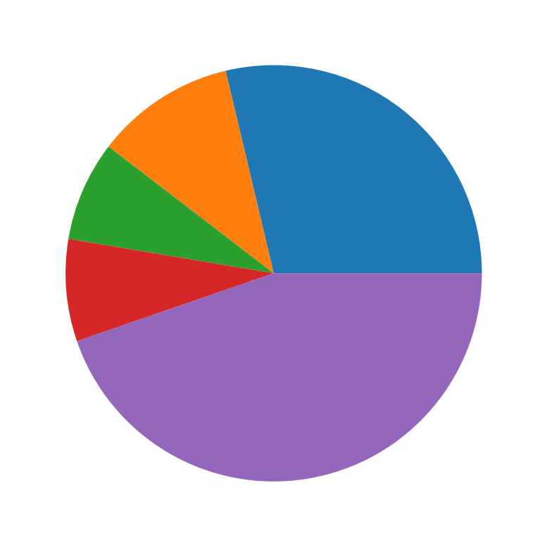
While this chart looks interesting, clearly it is hard to gain any insights from it because each slice is not labeled with the category name. We can add the category name to each slice using the the labels argument, which we can set to the reason_names we created above.
plt.pie(reason_counts, labels = reason_names);
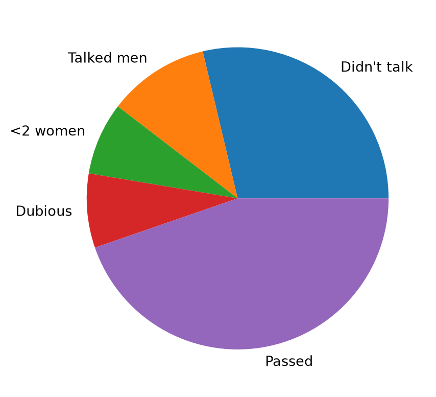
Limitations of Pie Charts:
While pie charts can might be popular in business settings, statisticians often have a negative view of pie charts for the following reasons:
Hard to compare slices: It can be difficult for the human eye to accurately compare the sizes of slices, especially when the differences are small or when there are many slices.
Not ideal for many categories: Pie charts become cluttered and hard to read if you have more than a few categories.
Less effective for showing exact values: While percentages can be added to each slice of a pie chart (by using the autopct argument), bar charts are generally better for showing precise frequencies or making direct comparisons.
Misleading if not used for parts of a whole: Pie charts should only be used when you are representing parts of a whole (i.e., proportions that sum to 100%).
For these reasons, many data visualization experts recommend using bar charts instead of pie charts in most situations.
TipExercise
Create a bar graph showing the number of movies that passed and failed the Bechdel test and a pie chart showing the proportion of movies that passed and failed the Bechdel test.
As we saw with our first pie chart, in order for a graph to be interpretable it is very important to always label your plots clearly! For many graphs, this means including:
X-axis label: What do the values on the horizontal axis represent? This can be done in Python using plt.xlabel().
Y-axis label: What do the values on the vertical axis represent? This can be done in Python using plt.ylabel().
A Title: What does the plot represent? This can be done in Python using plt.title().
Without these labels, your plot is just a collection of shapes and colors, and its meaning can be lost or misinterpreted.
As an illustration, let’s improve on our bar chart of the reasons movies fail the Bechdel test by adding the appropriate labels.
plt.bar(reason_names, reason_counts);plt.xlabel("Reason for Bechdel Test Result");plt.ylabel("Number of Movies");plt.title("Reasons Movies Passed or Failed the Bechdel Test");
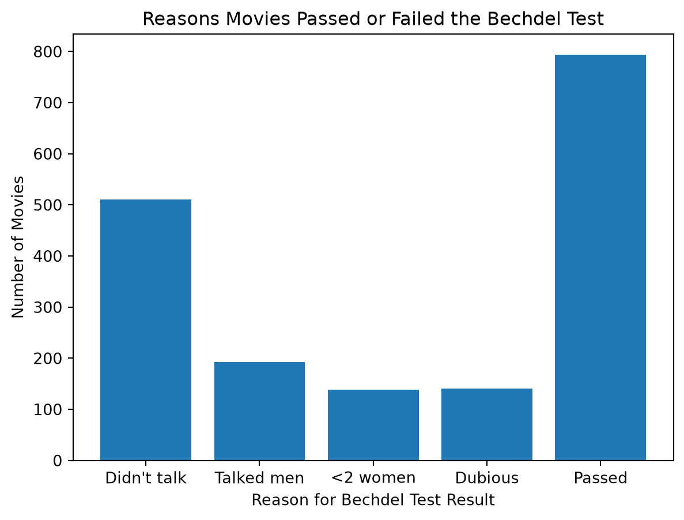
3.6 Visualizing quantitative data
Now that we have discussed how to visualize categorical data, let’s turn our attention to quantitative data!
3.6.1 Histograms
One of the most useful ways to visualize quantitative data is through a histogram. A histogram allows us to see the “distribution” of numerical data, meaning it shows us how often different ranges of values occur. This is particularly useful for understanding the shape of the data, such as whether most of the data clusters symmetrically around a central value, or whether there tends to be a skew where most values are higher or lower than the central value.
More specifically, a histogram is similar to a bar graph, but for quantitative data, where the “categories” are numerical intervals, called bins. The height of each bar in a histogram represents how many of data points falling within that particular bin.
Creating Bins
To create a histogram, we first need to define these bins. For example, if you have movie budgets (in millions of dollars) from $0 to $200 million, you might create bins like: * $0M - $50M * $50M - $100M * $100M - $150M * $150M - $200M * $150M - $200M+
Then, you count how many movie revenues fall into each bin to create a frequency table as shown below:
Domestic Gross Bin
Frequency
$0-50M
1056
$50-100M
409
$100-150M
179
$150-200M
79
$200-250M
38
$250M+
15
Total
1776
A histogram would then plot these bins on the x-axis and the frequency of movies in each bin on the y-axis.
We can create histograms in Python using the plt.hist() function from Matplotlib. This function automatically creates bins for us, but we can also specify the number of bins, or the bin edges, if we want more control over how the data is grouped using the bins argument.
# Define the bin edges for the histogram (matching the edges in our table above)bin_edges = [0, 50000000, 100000000, 150000000, 200000000, 250000000, float('inf')]# Plot the histogram of movie budgets in 2013 dollars# (also make the edges of the bars black for better visibility)plt.hist(budget_2013_dollars, bins = bin_edges, edgecolor='black');# Label the axes and titleplt.xlabel("Budget (2013 Dollars)");plt.ylabel("Number of Movies");plt.title("Distribution of Movie Budgets (2013 Dollars)");
/home/runner/.local/lib/python3.12/site-packages/matplotlib/axes/_axes.py:7551: RuntimeWarning: invalid value encountered in multiply
boffset = -0.5 * dr * totwidth * (1 - 1 / nx)
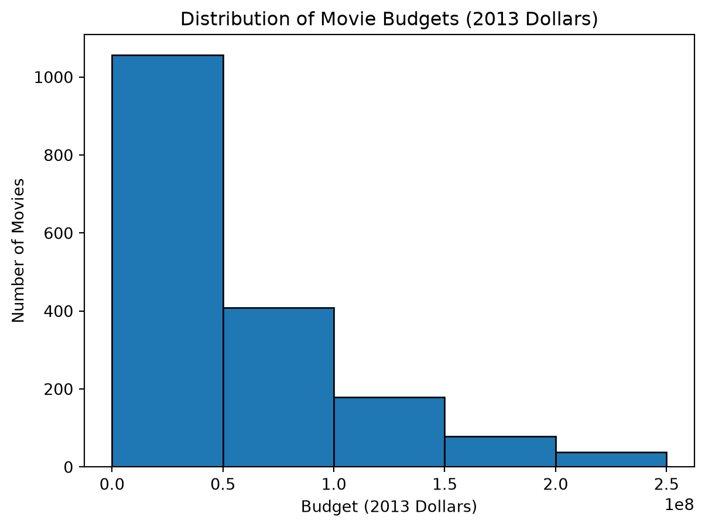
From looking at this histogram, we can see that most movies have budgets in the lower bins, with a few movies having much larger budgets that extend into the higher bins. This indicates a right-skewed distribution, where most values are clustered at the lower end, with a tail extending to the right due to the presence of a few high-budget movies.
Choosing Bins in a Histogram
In the above code we set the bins argument to a list of bin edges. This allows us to define custom bins for the histogram. However more frequently, we set the bins argument to an integer value, which tells Matplotlib how many bins to create, and Matplotlib will automatically create a set of equally spaced bins across the range of our data. For example, we could have used bins=10 to create 10 equally spaced bins across the range of our data. In this case, Matplotlib would automatically determine the bin edges based on the minimum and maximum values in our data.
Choosing the number of bins is important because it can affect how well we can see the distribution of the data. If too few bins are used, we might miss important details in the data. If too many bins are used, the histogram can become noisy it is hard to see underlying patterns. Generally, the choice of the number of bins depends on the amount of data we have, so that when we have a lot of data, we can use more bins to see more detail, and when we have less data, we should use fewer bins. Often starting with the default number of bins (which is usually around 10) is a good idea, and then adjusting based on how the data looks is a good approach.
Common Shapes of Histograms
Histograms can reveal the underlying shape of your data’s distribution. Common shapes for data distributions include:
Right-skewed: The tail on the right side of the distribution is longer than the left side. Most data points are concentrated on the left. This of income data, where many people have lower to moderate incomes, and a few have very high incomes.
Left-skewed: The tail on the left side is longer than the right. Most data points are concentrated on the right. Think of retirement ages, where most people retire in their 60s or 70s, but a few retire much earlier.
Symmetric and Bell-Shaped (Normal Distribution): The data is symmetrically distributed around a central value, forming a bell shape. Many natural phenomena follow this pattern (e.g., heights of people).
Symmetric but Not Bell-Shaped: The data is symmetric but doesn’t form a bell.
Uniform Distribution: All bins have roughly the same frequency. (e.g., rolling a fair die many times, each number has an equal chance).
Bimodal Distribution: Has two peaks. This might indicate two different groups in your data.
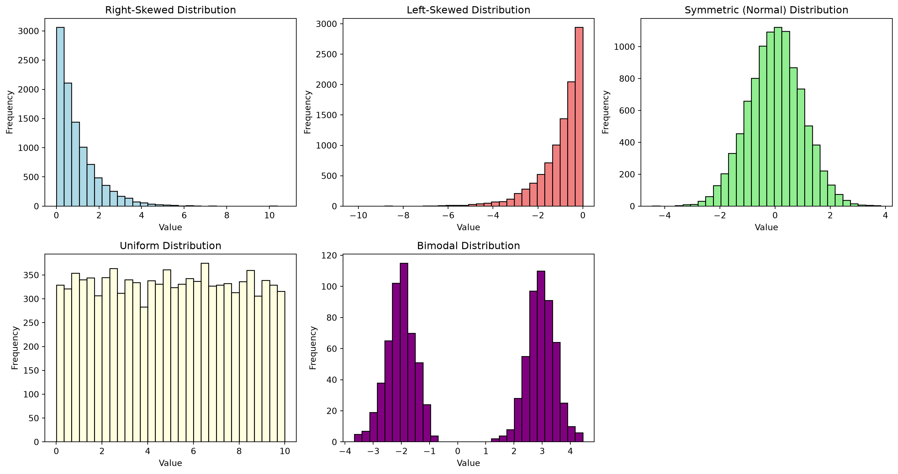
TipExercise
Create a histogram of the domestic gross revenue of movies in the domestic_gross_2013_dollars list. Set the argument bins equal to 10 to create a histogram with 10 bins, and label the x-axis as “Domestic Gross (2013 Dollars)”, the y-axis as “Number of Movies”, and give the plot a title of “Distribution of Domestic Gross Revenue (2013 Dollars)”. Then change the bin argument to bins=100 and see how the histogram changes. Report whether you think 10 or 100 bins best captures the distribution of the data.
NoteSolution
plt.hist(domestic_gross_2013_dollars, bins=10, edgecolor='black');plt.xlabel("Domestic Gross (2013 Dollars)");plt.ylabel("Number of Movies");plt.title("Distribution of Domestic Gross Revenue (2013 Dollars)");plt.show()plt.hist(domestic_gross_2013_dollars, bins=100, edgecolor='black');plt.xlabel("Domestic Gross (2013 Dollars)");plt.ylabel("Number of Movies");plt.title("Distribution of Domestic Gross Revenue (2013 Dollars)");
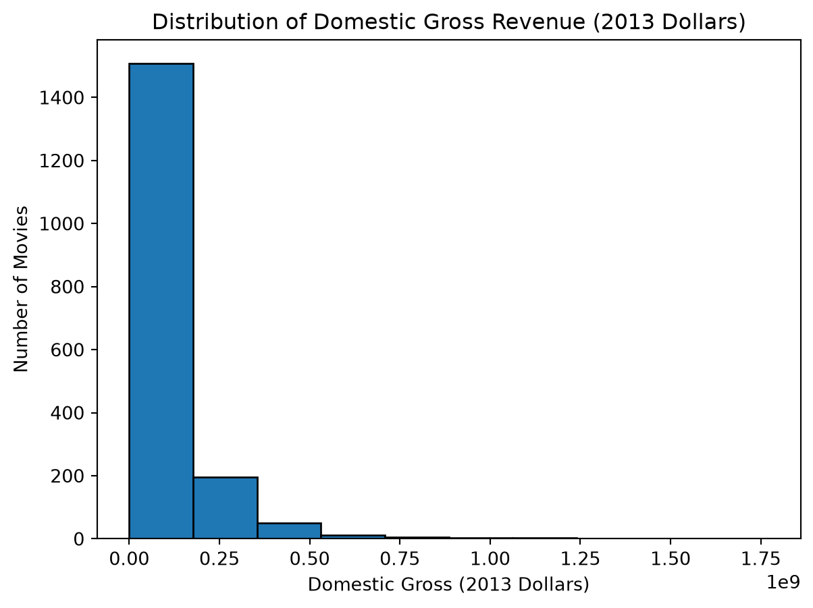
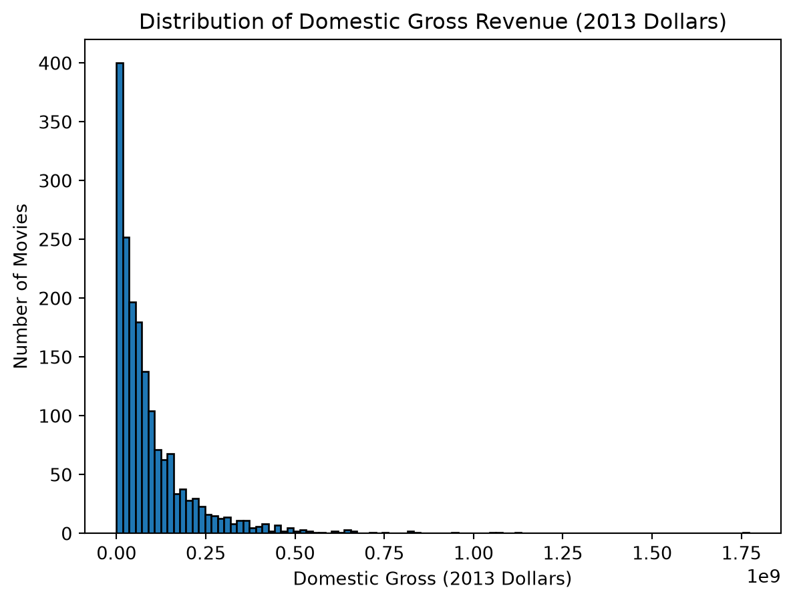
Given the large number of data points, I belive using 100 bins provides a more detailed view of the distribution, allowing us to see the finer details of how domestic gross revenues are distributed. However, one could be argue that using 100 bins make the histogram look more cluttered so using a smaller number could also be a reasonable choice. Overall, there is not one right answer to this question, and one should experiment with different numbers of bins to see which gives the most insight from the data.
3.7 Statistics for quantitative data
Beyond visualizations, we use numerical summaries (statistics) to describe quantitative data. These statistics help us quantify values that characterize the center of the data and how the data is spread, as well as identify other important characteristics of the data.
To calculate these statistics, we will use the statistics module in Python, which provides functions for calculating common statistics. To use this module, we first need to import it:
import statistics
3.7.1 Measure of central tendency 1: The mean
The mean, often called the average, is the most common measure of central tendency.
Calculation: It’s calculated by summing all the values in a dataset and then dividing by the number of values: Mean = (Sum of all values) / (Number of values).
In Python, we can calculate the mean using the statistics.mean() function.
# Calculating the mean by taking the sum of all values and dividing by the number of valuesmean_budget_manual =sum(budget_2013_dollars) /len(budget_2013_dollars)# Calculating the mean using the statistics modulemean_budget = statistics.mean(budget_2013_dollars)# Using f-string formatting for currencyprint(f"The mean budget is: ${mean_budget:,.2f}")print(f"The mean budget (calculated manually) is: ${mean_budget_manual:,.2f}")
The mean budget is: $55,889,828.76
The mean budget (calculated manually) is: $55,889,828.76
Note: We are able to use extra arguments to f-strings to print dollar amount with nicer formatting. In particular we used {mean_budget:,.2f} where the :,.2f part formats the number with commas (given by the ,) and two decimal places (given by the .2f). This means that the number will be displayed with commas and two decimal places, which is a common way to represent currency in the US.
3.7.2 Measure of central tendency 2: The median
The median is another measure of central tendency. It is the middle value in a dataset that has been sorted in ascending order.
Calculation: 1. Sort the data from smallest to largest. 2. If the number of data points (n) is odd, the median is the middle value at position (n+1)/2. 3. If the number of data points (n) is even, the median is the average of the two middle values at positions n/2 and (n/2) + 1.
In Python, we can calculate the median using the statistics.median() function.
# Use the sorted function to sort the data and return a new list with the sorted valuessorted_data =sorted(budget_2013_dollars)# Find the index of the middle valuedata_middle_index =int(len(sorted_data) /2)# Since there is an even number of data points, we take the average of the two middle values to get the medianmedian_budget_manual = (sorted_data[data_middle_index -1] + sorted_data[data_middle_index])/2# Calculating the median using the statistics modulemedian_budget = statistics.median(budget_2013_dollars)print(f"The median budget is: ${median_budget:,.2f}")print(f"The median budget (calculated manually) is: ${median_budget_manual:,.2f}")
The median budget is: $37,157,440.00
The median budget (calculated manually) is: $37,157,440.00
3.7.3 Median vs. Mean:
The median is often a better measure of central tendency when your data has outliers (extremely high or low values) or is skewed. For our budget_2013_dollars, which is right-skewed (a few movies make much more than most), you’ll notice the mean is significantly higher than the median. The mean is pulled upwards by the high-grossing movies, while the median provides a better sense of the “typical” movie’s budget in this sample.
Consider this income data: [30000, 32000, 35000, 40000, 1000000] * Mean: $227,400 = (30000+32000+35000+40000+1000000) / 5 * Median: $35,000 = middle value after sorting: [30000, 32000, 35000, 40000, 1000000]
The mean is heavily influenced by the one very high income, while the median gives a more typical representation.
Let’s visualize the mean and median on a histogram of our movie budgets to see how they compare visually.
# Visualizing Mean vs. Median on a Histogramplt.hist(budget_2013_dollars, bins=30, color='skyblue', edgecolor='black', alpha=0.7)# Adding vertical lines for mean and median budgetsplt.axvline(mean_budget, color='red', linestyle='dashed', label='Mean')plt.axvline(median_budget, color='green', linestyle='dashed', label='Median')plt.title("Distribution of Sample Movie Budgets with Mean and Median")plt.xlabel("Domestic Gross (2013 Dollars)")plt.ylabel("Frequency")plt.ticklabel_format(style='plain', axis='x')plt.xticks(rotation=30)plt.legend()plt.show()
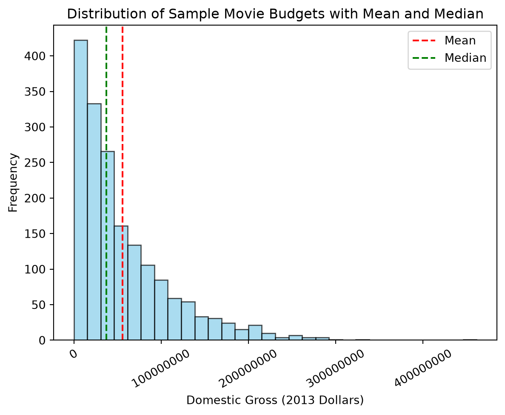
As we can see, the mean (red dashed line) is pulled to the right by the high-budget movies, while the median (green dashed line) is closer to the center of the distribution, providing a better representation of a “typical” movie budget in this dataset.
TipExercise
Exercise: Calculate Median Age and Impact of Outlier
Calculate the median of the ages data: ages = [22, 25, 30, 33, 35, 37, 40, 42, 45, 45, 48, 50, 52, 55, 60, 65, 28, 38, 46, 58]
Now, add an outlier: a person aged 100, to this list: ages_with_outlier = ages + [100]
Calculate both the mean and median for ages_with_outlier.
How did the mean and median change? Which is more representative in the presence of the outlier?
NoteSolution
Solution: Calculate Median Age and Impact of Outlier
ages = [22, 25, 30, 33, 35, 37, 40, 42, 45, 45, 48, 50, 52, 55, 60, 65, 28, 38, 46, 58]# 1. Median of original agesmedian_age_original = statistics.median(ages)mean_age_original = statistics.mean(ages)# 2. Add outlierages_with_outlier = ages + [100]# 3. Calculate mean and median for the new listmean_age_outlier = statistics.mean(ages_with_outlier)median_age_outlier = statistics.median(ages_with_outlier)print(f"Original mean age: {mean_age_original}")print(f"Mean age with outlier: {mean_age_outlier}")print(f"Original median age: {median_age_original}")print(f"Median age with outlier: {median_age_outlier}")
Original mean age: 42.7
Mean age with outlier: 45.42857142857143
Original median age: 43.5
Median age with outlier: 45
4. How did the mean and median change?
Original Mean: 42.7
Original Median: 43.5
Mean with Outlier: Increased from 42.7 to approximately 45.42 (a change of +2.73).
Median with Outlier: Increased from 43.5 to 45.0 (a change of +1.5).
The mean was pulled up more by the single outlier value of 100. The median also increased, as expected since the new value is at the higher end, but its change was less drastic. In the presence of this outlier, the median (45.0) is likely a more representative measure of the “typical” age in the dataset than the mean (45.81), as it is less influenced by the single very high age.
3.7.4 Measure of spread 1: The standard deviation
The standard deviation is a measure of the amount of variation or dispersion in a set of values. A low standard deviation indicates that the values tend to be close to the mean, while a high standard deviation indicates that the values are spread out over a wider range.
Calculation:
The standard deviation is calculated as follows:
Calculate the mean of the dataset.
For each data point, calculate the difference from the mean and square it.
Calculate the average of these squared differences.
Take the square root of this average to get the standard deviation.
where \(x_i\) represents each data point, \(\bar{x}\) is the average of the data points, and \(n\) is the number of data points.
We can calculate the standard deviation in Python using the statistics.stdev() function from the statistics module.
# Calculate the standard deviation using the statistics modulestd_dev_budget = statistics.stdev(budget_2013_dollars)print(f"The standard deviation of budget is: ${std_dev_budget:,.2f}")
The standard deviation of budget is: $55,019,663.75
The output will show the standard deviation of the movie budgets tells us how much the budgets vary from the mean budget. A higher standard deviation indicates that the budgets are more spread out, while a lower standard deviation indicates that they are closer to the mean.
The standard deviation of the movie budgets is approximately $50,000,000, which indicates movie budgets typically vary by about $50 million from the mean budget of approximately $100 million. This suggests a significant spread in the budgets of movies in this dataset, with some movies having much higher or lower budgets than the average (although care should be taken when interpreting this value, as the distribution of budgets is right-skewed, meaning that a few very high-budget movies can disproportionately affect the standard deviation).
TipExercise
Compare the standard deviation of movie budgets (in budget_2013_dollars) to the standard deviation of movie revenues (in domestic_gross_2013_dollars). Which one has a higher standard deviation? What does this tell you about the spread of movie budgets compared to the spread of movie revenues in this dataset? Is this what you would expect? Why or why not?
NoteSolution
# Calculate the standard deviation of movie budgetsstdev_budget = statistics.stdev(budget_2013_dollars)# Calculate the standard deviation of movie revenues stdev_revenue = statistics.stdev(domestic_gross_2013_dollars)print(f"The standard deviation of movie budgets is: ${stdev_budget:,.2f}")print(f"The standard deviation of movie revenues is: ${stdev_revenue:,.2f}")
The standard deviation of movie budgets is: $55,019,663.75
The standard deviation of movie revenues is: $125,965,348.89
The standard deviation of movie budgets is approximately 55 million dollars, while the standard deviation of movie revenues is approximately 100 million dollars. This indicates that movie revenues tend to be more spread out than movie budgets in this dataset. This is expected, as movie revenues can vary widely due to factors like box office performance, marketing, and audience reception, while budgets are often more constrained by production costs. The higher standard deviation in revenues suggests that while most movies have similar budgets, their financial success can vary significantly.
3.7.5 Quartiles
Quartiles are values that divide your sorted data into four equal parts. Like the standard deviation, they give are another way to quantify the spread of how data points are distributed. Quartiles are particularly useful for understanding the distribution of data when it is skewed or has outliers (i.e., extreme values in the data set). They help us identify the range in which the middle 50% of the data lies.
Quartiles:
Q1 (First Quartile): This is the 25th percentile. 25% of the data points are below Q1, and 75% are above it.
Q2 (Second Quartile): This is the 50th percentile, which is also the median of the dataset. 50% of the data is below Q2, and 50% is above.
Q3 (Third Quartile or Upper Quartile): This is the 75th percentile. 75% of the data points are below Q3, and 25% are above it.
Interquartile Range (IQR)
The Interquartile Range (IQR) is the difference between the third quartile (Q3) and the first quartile (Q1): IQR = Q3 - Q1. The IQR represents the range of the middle 50% of your data. It’s a robust measure of spread because it’s not affected by outliers.
Python Calculation: The statistics module’s quantiles() function can be used. Let’s use our budget_2013_dollars.
# Get the quartiles using the statistics modulequartile_values = statistics.quantiles(budget_2013_dollars, n=4)Q1 = quartile_values[0]median_q2 = quartile_values[1]Q3 = quartile_values[2]iqr = Q3 - Q1print(f"Q1 (25th percentile): ${Q1:,.2f}")print(f"Median (Q2 - 50th percentile): ${median_q2:,.2f}") # Same as statistics.median()print(f"Q3 (75th percentile): ${Q3:,.2f}")print(f"IQR (Interquartile Range): ${iqr:,.2f}")
Q1 (First Quartile): 25% of the movies in this dataset have budgets below ~$16 million, and 75% have budgets above it.
Q2 (Median): 50% of the movies have budgets below ~$38 million, and 50% have budgets above it.
Q3 (Third Quartile): 75% of the movies have budgets below ~$84 million, and 25% have budgets above it.
IQR (Interquartile Range): The middle 50% of the movie budgets fall within the range from ~$16 to ~$84 million, which gives us a measure of the spread of the central portion of the data,.
TipExercise
Exercise: Compare measures of spread for movie revenues
Calculate the interquartile range (IQR) for the movie revenues in domestic_gross_2013_dollars and compare it to the standard deviation. Which would you expect to by larger? Do the results match your expectations?
NoteSolution
# Calculate the quartiles for movie revenuesquartile_values_revenue = statistics.quantiles(domestic_gross_2013_dollars, n=4)Q1_revenue = quartile_values_revenue[0]Q3_revenue = quartile_values_revenue[2]iqr_revenue = Q3_revenue - Q1_revenueprint(f"IQR (Interquartile Range) for revenues: ${iqr_revenue:,.2f}")stdev_revenue = statistics.stdev(domestic_gross_2013_dollars)print(f"Standard Deviation for revenues: ${stdev_revenue:,.2f}")
IQR (Interquartile Range) for revenues: $101,219,902.75
Standard Deviation for revenues: $125,965,348.89
The interquartile range (IQR) for movie revenues is approximately $93 million, while the standard deviation is approximately $99 million. This indicates that the IQR is smaller than the standard deviation, which is expected because the IQR focuses on the middle 50% of the data and is less affected by extreme values (outliers). The standard deviation, on the other hand, takes into account all data points and can be influenced by outliers, leading to a larger value in this case.
3.7.5.1 Five number summaries and the box plot
The five-number summary is a set of descriptive statistics that provides a concise overview of the distribution of a dataset. It consists of:
Minimum (Min): The smallest value in the dataset.
First Quartile (Q1): The 25th percentile.
Median (Q2): The middle value (50th percentile).
Third Quartile (Q3): The 75th percentile.
Maximum (Max): The largest value in the dataset.
A box plot (or box-and-whisker plot) is a standardized way of visually displaying this five-number summary.
Components of a Box Plot:
Box: The central box extends from Q1 to Q3, representing the IQR. The length of the box is the IQR.
Median Line: A line inside the box marks the median (Q2).
Whiskers: Lines (the “whiskers”) typically extend from the ends of the box (Q1 and Q3) to the minimum and maximum values within a certain range. A common rule for whisker length is 1.5 times the IQR. So, the upper whisker extends to the largest data point less than or equal to Q3 + 1.5 * IQR, and the lower whisker extends to the smallest data point greater than or equal to Q1 - 1.5 * IQR.
Outliers: Any data points that fall outside the whiskers are often plotted as individual points. These are potential outliers.
Python Code for Box Plot using Matplotlib:
Let’s create a box plot for our budget_2013_dollars.
plt.boxplot(budget_2013_dollars, patch_artist=True) # patch_artist fills the boxplt.title("Box Plot of Sample Movie Budgets (2013 Dollars)")plt.ylabel("Budget (2013 Dollars)")plt.xticks([1], ['Sample Budgets']) # Label the x-axis tickplt.ticklabel_format(style='plain', axis='y') # Show plain numbers on y-axisplt.grid(True, axis='y', linestyle='--') # Add horizontal grid linesplt.show()
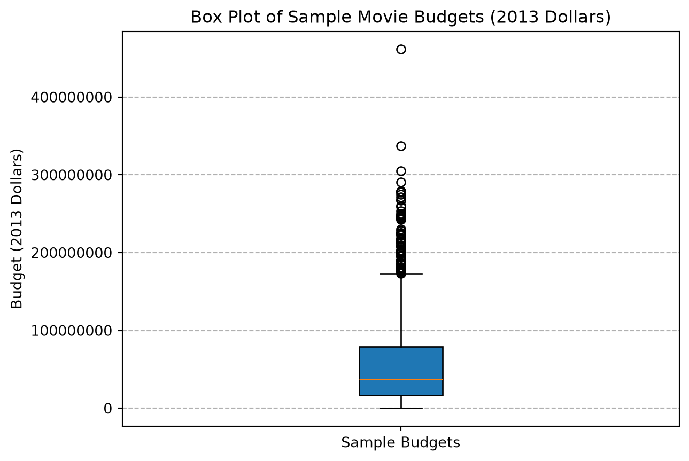
The box plot for movie revenues shows a compact box (small IQR relative to the total range) and a long upper whisker, with a number of points identified as outliers, visually confirming the right-skewness of the data.
TipExercise
Create a box plot for movie revenue data in domestic_gross_2013_dollars. Use the same style as above, and label the x-axis as “Domestic Gross (2013 Dollars)”, the y-axis as “Revenue (2013 Dollars)”, and give the plot a title of “Box Plot of Domestic Gross Revenue (2013 Dollars)”. Do you notice any very large outliers in the data? What do these outliers mean in terms of movie revenues?
NoteSolution
plt.boxplot(domestic_gross_2013_dollars, patch_artist=True) # patch_artist fills the boxplt.title("Box Plot of Domestic Gross Revenue (2013 Dollars)")plt.ylabel("Revenue (2013 Dollars)")plt.xticks([1], ['Domestic Gross']) # Label the x-axis tickplt.ticklabel_format(style='plain', axis='y') # Show plain numbers on y-axisplt.grid(True, axis='y', linestyle='--') # Add horizontal grid linesplt.show()
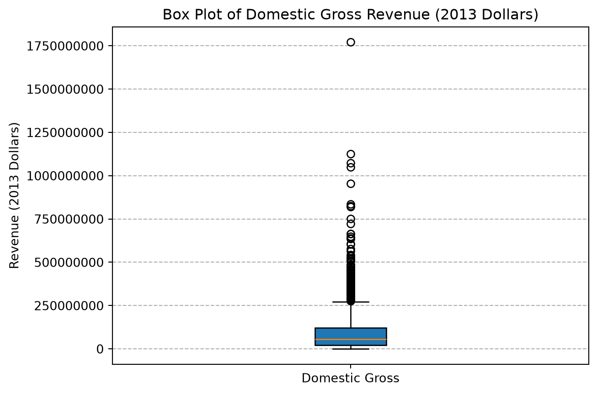
Yes, there is one particularly large outliers in the data, which can be seen as the very top point in box plot. This outlier indicates that there is a movie with exceptionally high revenue compared to the majority of movies in this dataset; i.e., there is “blockbuster” movies that made significantly more money than most movies.
3.7.5.2 Outliers
As briefly discussed above, an outlier is a data point that is significantly different from other observations in a dataset. Outliers can occur due to various reasons:
Measurement errors: Faulty equipment or incorrect readings.
Data entry errors: Typos during data input.
Genuine extreme values: The data point is a legitimate, but rare, occurrence (e.g., a billionaire’s income in a general population survey).
Impact of Outliers:
As also discussed above, outliers can have a substantial impact on statistical analyses:
They can heavily skew the mean.
They can inflate the standard deviation, making the data appear more spread out than it actually is for the typical values.
As we will discuss later, they can affect the results of some statistical tests or models.
Identifying Outliers - The 1.5 x IQR Rule:
A common method for identifying potential outliers, often visualized by box plots, is the 1.5 x IQR rule:
Calculate the Interquartile Range (IQR = Q3 - Q1).
Determine the lower fence: Q1 - 1.5 * IQR
Determine the upper fence: Q3 + 1.5 * IQR
Any data point that falls below the lower fence or above the upper fence is considered a suspected outlier.
Example (using our budget_2013_dollars data):
Let’s calculate which values would be considered outliers in the budget_2013_dollars.
For our movie budgets, the lower fence might be around $-85 million. This value doesn’t make sense in this context since we can’t really have negative budgets, so there are no lower outliers in this dataset. The upper fence might be around $186 million. Any budget above $186 million would be considered an outlier by this rule.
In the next chapter we will learn how to use numerical array operations using the numpy library to easily find all outliers in a dataset.
Handling Outliers:
There’s no single “best” way to handle outliers; it depends on the cause and the context of your analysis, but in general, here are some common approaches:
Correct: If the outlier is a confirmed error (e.g., a typo like age 250 instead of 25), correct it if possible or possibly remove the data point from the dataset if correction is not possible.
Investigate: Always try to understand why the outlier exists. As mentioned above if the outlier is due to an error, then one can correct it or potentially remove it. If it’s a genuine extreme value, you should try to understand the reason for the outlier by looking at other information about the data point. For example, in our movie data, is there something particulalry noteworthy about the movie that has a very high budget or revenue? Outliers can provide valuable insights so investigating them can tell potentially tell you interesting information about the data.
Analyze with and without the outlier: If it’s a genuine extreme value, it might be important information.
Use robust statistical methods that are less sensitive to outliers (e.g., using the median instead of the mean, or using the IQR instead of standard deviation for spread).
You could run analyses both with and without the outlier to see how much it influences the results. Report both results, as this can provide a more comprehensive understanding of the data.
If you do remove the outlier, it is critically important to document this decision and report this in any analysis that is done on this data.
TipExercise
Find the most extreme outlier value in the domestic_gross_2013_dollars list using the max() function. Then answer the following questions:
What is the value of the most extreme outlier?
What movie does this outlier correspond to?
Did this movie pass the Bechdel test?
Hint: You can find the movie title corresponding to a specific revenue value by using the .index() method on the domestic_gross_2013_dollars list to find the index of the outlier value, and then use that index to access the corresponding movie title in the movie_titles list and whether it passed the Bechdel test using the bechdel_status list.
NoteSolution
# Find the maximum value in the budget_2013_dollars listmax_revenue =max(domestic_gross_2013_dollars)max_revenue_index = domestic_gross_2013_dollars.index(max_revenue)max_revenue_movie = movie_titles[max_revenue_index]print(f"The most extreme outlier value in domestic gross revenue is: ${max_revenue:,.2f}")print(f"This outlier corresponds to the movie: {max_revenue_movie}")print(f"The movie {bechdel_status[max_revenue_index]}ED the Bechdel test.")
The most extreme outlier value in domestic gross revenue is: $1,771,682,790.00
This outlier corresponds to the movie: Star Wars
The movie FAILED the Bechdel test.
3.7.6 Z-scores
A Z-score measures how many standard deviations a particular data point is away from the mean of its distribution.
Purpose of Z-scores:
Standardization: Z-scores transform data from different scales into a common standard scale, with a mean of 0 and a standard deviation of 1. This allows for comparison of values from different datasets that might have different original means and standard deviations.
Identifying Unusual Values:
A Z-score close to 0 means the data point is close to the mean.
Z-scores greater than 0 indicate the data point is above the mean.
Z-scores less than 0 indicate the data point is below the mean.
Generally, Z-scores greater than +2 or less than -2 are considered somewhat unusual.
Z-scores greater than +3 or less than -3 are often considered very unusual or potential outliers.
Formula:
\(z_i = \frac{x_i - \bar{x}}{s}\)
Where: * \(x_i\) is the individual data point * \(\bar{x}\) is the mean of the dataset. * \(s\) is the standard deviation of the dataset.
Python Calculation:
For a change of pace, let’s look at some basketball data to illustrate Z-scores. The Most Valuable Player in the 2023-2024 NBA season was Nikola Jokić, who played for the Denver Nuggets. Nikola’s statistics for the 2023-2024 season were as follows:
Statistic
Value
Points Per Game
26.4
Rebounds Per Game
12.4
Assists Per Game
9.0
Steals Per Game
1.4
Blocks Per Game
0.9
Field Goal %
58.3%
3-Point %
35.9%
Free Throw %
81.0%
Which of these statistics is the most impressive?
From looking at this data it is hard to tell. However, if we know the average and standard deviation for each statistic across the league, we can calculate Z-scores to see how Nikola Jokić’s performance compares to the rest of the league. The following table shows the average and standard deviation for points scored per game in the 2023-2024 NBA season:
Statistic
Average
Standard Deviation
Points Per Game
12.5
6.5
Rebounds Per Game
4.6
2.4
Assists Per Game
2.9
2.0
Steals Per Game
0.8
0.3
Blocks Per Game
0.6
0.5
Field Goal %
48.2%
6.8%
3-Point %
33.4%
11.3%
Free Throw %
77.4%
8.7%
If we calculate the Z-score for Nikola Jokić’s for each of these statistics, we can see how his performance compares to the average player in the league to determine which statistic is the most impressive relative to the rest of the league.
zscore_points = (26.4-12.5) /6.5zscore_rebounds = (12.4-4.6) /2.4zscore_assists = (9.0-2.9) /2.0zscore_steals = (1.4-0.8) /0.3zscore_blocks = (0.9-0.6) /0.5zscore_fg = (58.3-48.2) /6.8zscore_3p = (35.9-33.4) /11.3zscore_ft = (81.0-77.4) /8.7# Put all the Z-scores into a dictionary to make them easy to readz_scores = {"Points Per Game": zscore_points,"Rebounds Per Game": zscore_rebounds,"Assists Per Game": zscore_assists,"Steals Per Game": zscore_steals,"Blocks Per Game": zscore_blocks,"Field Goal %": zscore_fg,"3-Point %": zscore_3p,"Free Throw %": zscore_ft} z_scores
{'Points Per Game': 2.1384615384615384,
'Rebounds Per Game': 3.2500000000000004,
'Assists Per Game': 3.05,
'Steals Per Game': 1.9999999999999996,
'Blocks Per Game': 0.6000000000000001,
'Field Goal %': 1.485294117647058,
'3-Point %': 0.22123893805309733,
'Free Throw %': 0.41379310344827525}
From looking at the Z-scores, we can see that Nikola Jokić’s performance was above average for all statistics since his z-score were positive for all statistics. However, he was particularly impressive in terms of assists per game and rebounds per game, with Z-scores of approximately 3.05 and 3.25, respectively. This means he performed more than 3 standard deviations above the average player in those categories, indicating an exceptional level of performance compared to his peers. For points per game, his Z-score was approximately 2.14, which is also impressive, but not as high as his assists and rebounds. His field goal percentage Z-score of approximately 1.48 and 3-point percentage Z-score of approximately 0.22 indicate that while he was above average in these areas, they were not as exceptional compared to the rest of the league. His free throw percentage Z-score of approximately 0.41 is also above average, but not as impressive as his other statistics.
TipExercise
In a previous exercise we saw that Star Wars was an outlier in terms of revenue. To see how much of an outlier it is, please calculate the Z-score for Star Wars’ revenue using the average and standard deviation from the domestic_gross_2013_dollars data. Does this z-score seem impressive?
NoteSolution
star_wars_revenue =1771682790mean_revenue = statistics.mean(domestic_gross_2013_dollars)stdev_revenue = statistics.stdev(domestic_gross_2013_dollars)z_score_star_wars = (star_wars_revenue - mean_revenue) / stdev_revenueprint(f"The Z-score for Star Wars' revenue is: {z_score_star_wars:.2f}")
The Z-score for Star Wars' revenue is: 13.31
The Z-score for Star Wars’ revenue is approximately 13.3. This indicates that Star Wars’ revenue is more than 13 standard deviations above the average movie revenue in this dataset, which is extremely high and confirms that it is indeed an outlier. This Z-score suggests that Star Wars’ revenue is exceptionally high compared to the majority of movies in this dataset, making it one of the highest-grossing films of all time.
3.8 Two quantitative variables
So far, we’ve looked at describing and visualizing single variables (univariate analysis). Now, let’s explore situations where we have pairs of quantitative variables and want to understand if and how they relate to each other (bivariate analysis).
3.8.1 Scatter plots
When you have two quantitative variables, a scatter plot is an excellent first step to visualize their relationship. Each point on a scatter plot represents a pair of values; one variable is plotted on the x-axis, and the other on the y-axis.
Purpose: * To see if there’s a relationship between the two variables. * To identify the general pattern or trend of the relationship. * To spot any unusual observations (outliers) that don’t fit the general pattern.
We can create a scatter plot using the matplotlib library using either the plt.plot() or plt.scatter() functions. The plt.scatter() function is typically preferred for scatter plots because it allows you to specify the color and size of the points, making it easier to visualize the data.
Let’s visualize the relationship between movie budgets and their domestic gross revenues using our sample data.
plt.figure(figsize=(8, 6))plt.scatter(budget_2013_dollars, domestic_gross_2013_dollars);#, color='darkcyan', alpha=0.7) # alpha for transparencyplt.title("Movie Budget vs. Domestic Revenue (2013 Dollars, Sample)")plt.xlabel("Budget (2013 Dollars)")plt.ylabel("Domestic Revenue (2013 Dollars)")plt.ticklabel_format(style='plain', axis='both') # Show plain numbersplt.grid(True)plt.show()
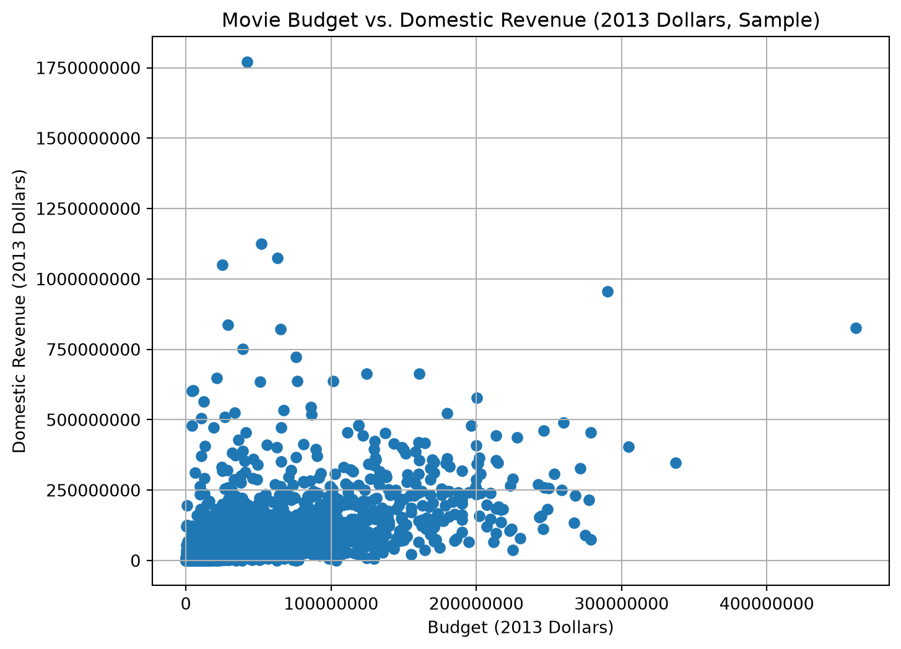
Interpreting Scatter Plots: When examining a scatter plot, look for:
Direction:
Positive Association: As the x-variable increases, the y-variable tends to increase. The points will generally slope upwards from left to right. (e.g., study hours and exam scores).
Negative Association: As the x-variable increases, the y-variable tends to decrease. The points will generally slope downwards from left to right. (e.g., number of absences and exam scores).
No Clear Direction: No discernible increasing or decreasing trend.
Form:
Linear: The points tend to cluster around a straight line.
Curvilinear (Non-linear): The points tend to follow a curved pattern (e.g., a U-shape or an inverted U-shape).
No Clear Form / Clusters: Points are scattered without a clear line or curve, or they might form distinct clusters.
Strength:
Strong: The points are tightly clustered around the identified form (e.g., very close to a straight line). The relationship is clear.
Weak: The points are widely spread out from the form. The relationship is less clear.
Moderate: Somewhere in between strong and weak.
You might also notice outliers, which are points that lie far away from the general pattern of the other data points. With our small sample of movie budget and revenue data, the relationship might not be extremely clear due to the limited number of points and potential for wide variation in movie performance. Generally, one might expect a positive association (higher budget, higher potential revenue), but this is not always strong or guaranteed.
From looking at the scatter plot, it is hard to see a clear pattern due to mainly points laying on top of each other in the lower left corner of the plot and the fact that there is a large amount of variation in the data.
If we look at the points very closely, we might see that there is possibly a weak positive positive association between movie budgets and domestic revenues. As the budget increases, the domestic revenue tends to increase as well, although there are some exceptions. The relationship appears to be somewhat linear, but again the strength of the relationship seems to relatively weak, so it is hard to see a clear pattern. We also again see the clear outlier of Star Wars, which has a very high typical budget and and very high revenue.
TipExercise
Create a scatter plot of movies domestic gross revenue (domestic_gross_2013_dollars) vs. international gross revenue (int_gross_2013_dollars) using the same style as above. Label the x-axis as “Domestic Gross Revenue (2013 Dollars)”, the y-axis as “International Gross Revenue (2013 Dollars)”, and give the plot a title of “Domestic vs. International Gross Revenue (2013 Dollars)”.
Also describe the relationship you see in the scatter plot. Is there a positive or negative association? Is it linear or non-linear? Is it strong or weak? Are there any outliers? If so, what do they mean in terms of movie revenues?
NoteSolution
plt.figure(figsize=(8, 6))plt.scatter(domestic_gross_2013_dollars, int_gross_2013_dollars, color='darkcyan', alpha=0.7)plt.title("Domestic vs. International Gross Revenue (2013 Dollars)")plt.xlabel("Domestic Gross Revenue (2013 Dollars)")plt.ylabel("International Gross Revenue (2013 Dollars)")plt.ticklabel_format(style='plain', axis='both') # Show plain numbersplt.grid(True)plt.show()
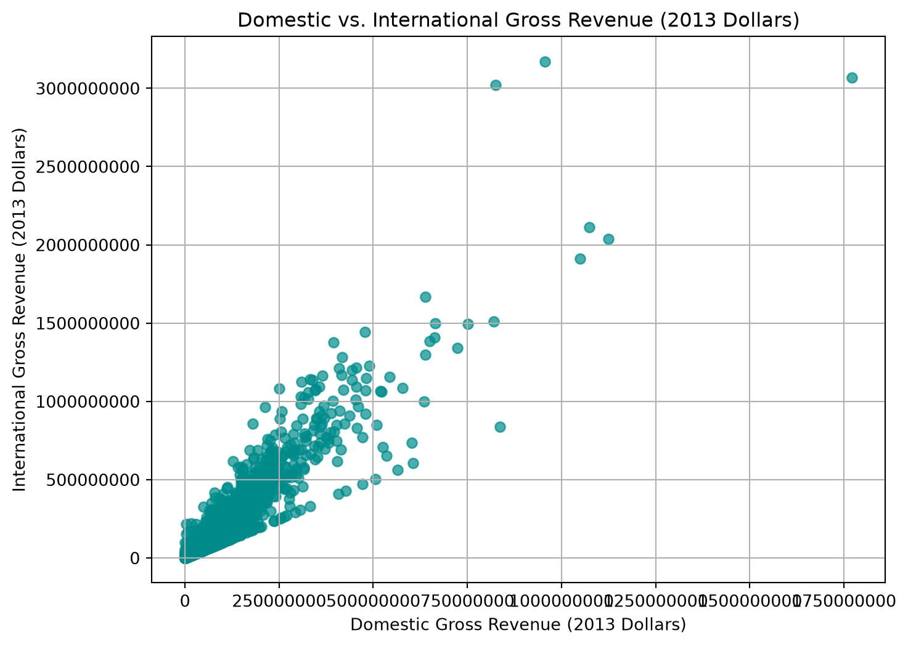
From looking at the scatter plot, we can see a positive association between domestic and international gross revenues. As domestic revenue increases, international revenue also tends to increase. The relationship appears to be linear, with most points clustering around a straight line, indicating a strong relationship. However, there are some outliers, particularly movies with very high international revenues compared to their domestic revenues. These outliers likely represent blockbuster movies that performed exceptionally well internationally, even if they did not perform as well domestically.
3.8.2 The correlation statistic
While scatter plots give us a visual sense of the relationship, the correlation coefficient (often just called correlation) provides a numerical measure (i.e., a statistic value) of the strength and direction of a linear relationship between two quantitative variables. The most common type is Pearson’s correlation coefficient, denoted as r.
Properties of Pearson’s r:
Range: The value of r is always between -1 and +1, inclusive.
Positive Correlation (r > 0): Indicates a positive linear relationship. As one variable increases, the other tends to increase. An r of +1 indicates a perfect positive linear relationship (all points lie exactly on a straight line that slopes upwards).
Negative Correlation (r < 0): Indicates a negative linear relationship. As one variable increases, the other tends to decrease. An r of -1 indicates a perfect negative linear relationship (all points lie exactly on a straight line that slopes downwards).
No Linear Correlation (r ≈ 0): An r value close to 0 suggests that there is no linear association between the variables. However, there might still be a strong non-linear relationship (e.g., a U-shape), which correlation would not capture.
Strength: The closer r is to +1 or -1, the stronger the linear relationship. An r of 0.8 indicates a stronger positive linear relationship than an r of 0.4. Similarly, an r of -0.9 indicates a stronger negative linear relationship than an r of -0.5.
Symmetry: The correlation between X and Y is the same as the correlation between Y and X. In other words, r(X, Y) = r(Y, X).
The formula for Pearson’s correlation coefficient is: \[r = \frac{\sum (x_i - \bar{x})(y_i - \bar{y})}{\sqrt{\sum (x_i - \bar{x})^2 \sum (y_i - \bar{y})^2}}\]
where:
\(x_i\) and \(y_i\) are the individual data points for the two variables.
\(\bar{x}\) and \(\bar{y}\) are the means of the two variables.
We can understand this formula in term z-scores. The correlation coefficient r is the average of the product of the z-scores of the two variables. In other words, it measures how much the z-scores of one variable tend to increase or decrease with the z-scores of the other variable.
Python Calculation:
In Python, we can use the statistics.correlation() to calculate the correlation coefficient r. Let’s calculate it for our sample movie budgets and revenues.
From looking at this output, we see that the correlation coefficient r is approximately 0.46. This indicates a moderate positive linear relationship between movie budgets and domestic revenues; i.e., movies with higher budgets tend to have higher domestic revenues. This value is not very close to 1, so the relationship is not very strong, but it is still a positive association.
Important Note: Correlation Does Not Imply Causation!
This is a crucial point in statistics: just because two variables are correlated (even strongly correlated) does not mean that one variable causes the other to change. There might be:
Confounding variable: A third, unobserved variable that is affecting both variables. (e.g., ice cream sales and shark attacks are correlated, but both are caused by warmer weather).
Reverse causation: It’s possible that Y causes X, rather than X causing Y.
Correlation tells you that there is an association, not the reason for it!
TipExercise
Calculate the correlation coefficient between movie domestic gross revenue (domestic_gross_2013_dollars) and international gross revenues (int_gross_2013_dollars`). What does this tell you about the relationship between these two variables? Is it a strong or weak correlation? Is it positive or negative?
NoteSolution
correlation_budget_int_gross = statistics.correlation(domestic_gross_2013_dollars, int_gross_2013_dollars)print(f"Correlation between movie budgets and international gross revenues: {correlation_budget_int_gross:.2f}")
Correlation between movie budgets and international gross revenues: 0.93
The correlation coefficient between movie domestic gross revenue and international gross revenues is approximately 0.93. This indicates a strong positive linear relationship between these two variables; i.e., movies with higher domestic revenues tend to have higher international revenues as well. This suggests that movies that perform well domestically also tend to perform well internationally, which is consistent with the idea that successful movies often have broad appeal across different markets.
3.9 Summary
Congratulations on making it through this chapter on descriptive statistics and plots! You’ve taken a significant step from understanding Python basics to actually using Python to explore and make sense of data.
We started by learning the fundamental distinction between categorical data (like favorite colors or types of pets) and quantitative data (like ages or exam scores). This distinction guides how we approach summarizing and visualizing information.
For categorical data, you learned how to:
Summarize it using frequency tables and proportions.
Visualize it effectively with bar graphs and, while understanding their limitations, pie charts.
For quantitative data, we covered a broader range of tools:
Visualizing distributions with histograms (and interpreting their shapes like skewed or symmetric) and box plots.
Summarizing its central tendency with the mean and median.
Measuring its spread or variability with the standard deviation, quartiles (Q1, Q3), and the Interquartile Range (IQR).
Putting these together into a five-number summary.
Understanding and identifying outliers and calculating Z-scores to see where data points stand relative to their distribution.
We also looked at two quantitative variables together:
Using scatter plots to visualize their relationship.
Quantifying the strength and direction of a linear relationship with the correlation coefficient.
And finally, we saw how line plots are useful for visualizing time series data to spot trends.
Throughout this chapter, we’ve relied on base Python, particularly the statistics module for calculations, and the versatile matplotlib.pyplot library for creating our plots. Remember, clear labeling of your plots is crucial for communication!
The descriptive statistics and visualization techniques you’ve learned here are the building blocks for more advanced data analysis and statistical inference that you might encounter later. Keep practicing, explore different datasets, and you’ll become increasingly comfortable turning raw data into meaningful insights!
3.10 Exercises
Exercise: Pet Preferences
Given the following list of preferred pets from a small survey: ['Dog', 'Cat', 'Bird', 'Dog', 'Cat', 'Dog', 'Fish', 'Dog']
Create a frequency table for this data.
Visualize the frequency table using a bar graph with appropriate labels (title, x-label, y-label).
Solution. Solution: Pet Preferences
Frequency Table:
First, let’s count the occurrences of each pet:
Dog: 4
Cat: 2
Bird: 1
Fish: 1
Pet
Frequency
Dog
4
Cat
2
Bird
1
Fish
1
Total
8
Bar Graph Code:
import matplotlib.pyplot as plt# Pet preference datapets = ['Dog', 'Cat', 'Bird', 'Fish']frequencies = [4, 2, 1, 1]# Create the bar graphplt.figure(figsize=(7, 5))plt.bar(pets, frequencies, color=['brown', 'grey', 'blue', 'cyan'])# Add labels and titleplt.xlabel("Pet Type")plt.ylabel("Number of People")plt.title("Pet Preferences Survey Results")# Display the plotplt.show()
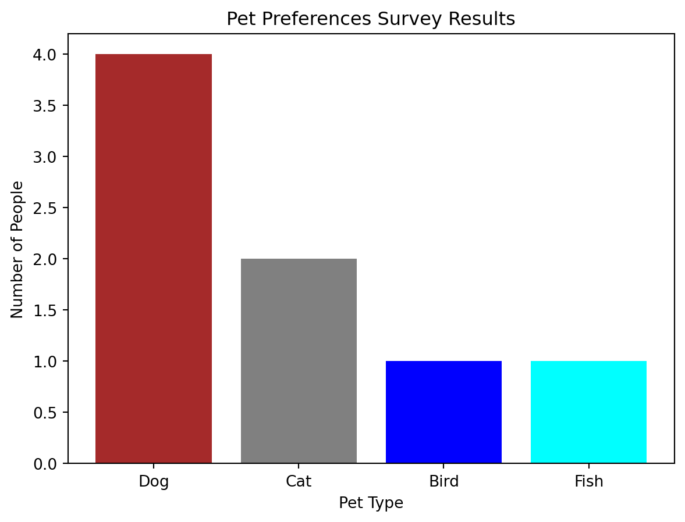
(When you run this code, a bar graph image will be displayed showing the frequencies of pet preferences.)
Exercise: Pet Preferences Pie Chart
Using the same pet preference data from the bar graph exercise (['Dog', 'Cat', 'Bird', 'Dog', 'Cat', 'Dog', 'Fish', 'Dog']), create a pie chart. 1. Add a title and ensure each slice is labeled with the pet name and its percentage. 2. Briefly comment on whether the bar graph or pie chart is more effective for this data and why.
Solution. Solution: Pet Preferences Pie Chart
Pie Chart Code:
import matplotlib.pyplot as plt# Pet preference datapets = ['Dog', 'Cat', 'Bird', 'Fish']frequencies = [4, 2, 1, 1]colors = ['brown', 'grey', 'blue', 'cyan']plt.figure(figsize=(8, 8))plt.pie(frequencies, labels=pets, colors=colors, autopct='%1.1f%%', startangle=90)plt.title("Pet Preferences Survey (Pie Chart)")plt.axis('equal') # Ensures pie is drawn as a circleplt.show()
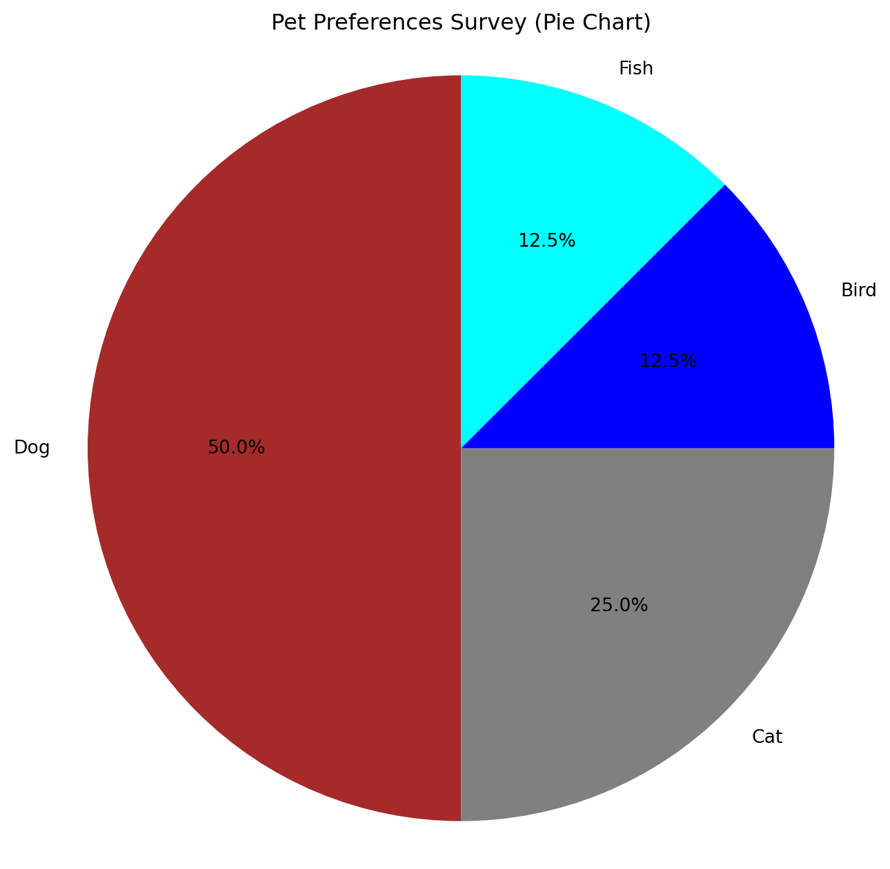
*(When you run this code, a pie chart image will be displayed.)*
Comparison:
For this particular dataset (Dog: 4, Cat: 2, Bird: 1, Fish: 1):
The bar graph is likely more effective. It clearly shows that “Dog” is the most preferred pet and makes it easy to compare the exact frequencies (e.g., “Dog” is twice as popular as “Cat”).
The pie chart shows the proportions, but comparing the smaller slices (Bird vs. Fish, or even Cat vs. Dog) can be less precise visually than comparing bar heights. While the percentages help, the visual comparison itself is weaker. If the goal is to quickly see which category is largest and roughly its proportion of the whole, a pie chart can work, but for more detailed comparisons, the bar chart excels.
Exercise: Ages Histogram
Given the following list of ages: ages = [22, 25, 30, 33, 35, 37, 40, 42, 45, 45, 48, 50, 52, 55, 60, 65, 28, 38, 46, 58]
Create a histogram with 5 bins.
Label your plot appropriately (title, x-label, y-label).
*(This code will display a histogram of the ages.)*
Shape Description: Observing the generated histogram: The data appears to be somewhat spread out. Depending on the exact binning Matplotlib chooses for 5 bins, it might look slightly right-skewed (younger ages more frequent, tailing off to older ages) or relatively symmetric but spread out (platykurtic if it’s flat, or just a wide symmetric distribution). For example, if bins are [20-30, 30-40, 40-50, 50-60, 60-70], the frequencies might be [3, 5, 6, 4, 2]. This would show a central tendency around 40-50, with tails on both sides, perhaps slightly skewed to the right due to the 60-70 bin being less populated than the 20-30 bin relative to their distance from the mode. A more precise description depends on the visual output. For learning purposes, we can say it’s broadly symmetric with a tendency towards a slight right skew.
Exercise: Calculate Mean Age
Calculate the mean of the ages data from the histogram exercise using Python: ages = [22, 25, 30, 33, 35, 37, 40, 42, 45, 45, 48, 50, 52, 55, 60, 65, 28, 38, 46, 58]
Solution. Solution: Calculate Mean Age
import statisticsages = [22, 25, 30, 33, 35, 37, 40, 42, 45, 45, 48, 50, 52, 55, 60, 65, 28, 38, 46, 58]mean_age = statistics.mean(ages)print(f"The mean age is: {mean_age}")
The mean age is: 42.7
Output:
The mean age is: 43.1
Exercise: Calculate and Interpret Quartiles for Ages
Q1 (34.25 years): 25% of the individuals in the dataset are younger than 34.25 years, and 75% are older.
Q3 (50.5 years): 75% of the individuals are younger than 50.5 years, and 25% are older.
IQR (16.25 years): The middle 50% of the ages in this dataset span a range of 16.25 years, from 34.25 years to 50.5 years. This gives a measure of the spread of the central portion of the data, ignoring potential outliers at the extremes.
Exercise: Create and Interpret Box Plot for Ages
Create a box plot for the ages data: ages = [22, 25, 30, 33, 35, 37, 40, 42, 45, 45, 48, 50, 52, 55, 60, 65, 28, 38, 46, 58]
Based on your quartile calculations and the plot, try to identify the approximate values for the five-number summary from the visual.
Are there any potential outliers indicated by the plot for this dataset?
Solution. Solution: Create and Interpret Box Plot for Ages
Minimum: The lower whisker extends down to approximately 22.
Q1: The bottom edge of the box is around 34.
Median (Q2): The line inside the box is around 43-44.
Q3: The top edge of the box is around 50-51.
Maximum: The upper whisker extends up to approximately 65.
(The exact values from the code are: Min: 22, Q1: 34.25, Median: 43.5, Q3: 50.5, Max: 65)
Potential Outliers: For the ages dataset provided, the standard box plot in Matplotlib typically does not show any individual points beyond the whiskers. This suggests that all data points fall within the Q1 - 1.5*IQR and Q3 + 1.5*IQR range. Let’s check: IQR = 50.5 - 34.25 = 16.25Lower bound = Q1 - 1.5 * IQR = 34.25 - 1.5 * 16.25 = 34.25 - 24.375 = 9.875Upper bound = Q3 + 1.5 * IQR = 50.5 + 1.5 * 16.25 = 50.5 + 24.375 = 74.875 Since the minimum age is 22 (which is > 9.875) and the maximum age is 65 (which is < 74.875), there are no outliers according to this common rule. The whiskers will extend to the actual minimum (22) and maximum (65).
Exercise: Calculate and Interpret Z-scores for Ages
Calculate the Z-scores for the minimum age (22) and the maximum age (65) in the dataset.
What do these Z-scores tell you about these specific ages in relation to the rest of the data?
Solution. Solution: Calculate and Interpret Z-scores for Ages
Python Code:
import statisticsages = [22, 25, 30, 33, 35, 37, 40, 42, 45, 45, 48, 50, 52, 55, 60, 65, 28, 38, 46, 58]mean_age = statistics.mean(ages)stdev_age = statistics.stdev(ages)min_age =min(ages) # 22max_age =max(ages) # 65z_score_min = (min_age - mean_age) / stdev_agez_score_max = (max_age - mean_age) / stdev_ageprint(f"Mean age: {mean_age:.2f}, Standard deviation: {stdev_age:.2f}")print(f"Z-score for minimum age ({min_age}): {z_score_min:.2f}")print(f"Z-score for maximum age ({max_age}): {z_score_max:.2f}")
Mean age: 42.70, Standard deviation: 11.93
Z-score for minimum age (22): -1.73
Z-score for maximum age (65): 1.87
Output:
Mean age: 43.10, Standard deviation: 12.64
Z-score for minimum age (22): -1.67
Z-score for maximum age (65): 1.73
Interpretation:
Z-score for minimum age (22) is -1.67: This means the age of 22 is 1.67 standard deviations below the average age of 43.1 years. It’s younger than average, but not extremely so (as it’s within 2 standard deviations).
Z-score for maximum age (65) is 1.73: This means the age of 65 is 1.73 standard deviations above the average age. It’s older than average, and again, not extremely so by the common Z-score thresholds (e.g. >2 or >3).
Both these ages are relatively far from the mean but are not typically considered outliers based solely on the common Z-score benchmarks of +/-2 or +/-3. They represent the lower and upper ends of this particular dataset’s distribution.
Exercise: Car Age and Price Scatter Plot
Consider the following data for the age of a car (in years) and its price (in thousands of dollars): car_age = [1, 2, 2, 3, 4, 5, 5, 6, 7, 8, 10]car_price = [20, 18, 19, 15, 14, 12, 13, 10, 9, 8, 6]
Create a scatter plot for this data.
Label your plot appropriately.
Describe the relationship you observe (direction, form, strength).
Solution. Solution: Car Age and Price Scatter Plot
Scatter Plot Code:
import matplotlib.pyplot as pltcar_age = [1, 2, 2, 3, 4, 5, 5, 6, 7, 8, 10]car_price = [20, 18, 19, 15, 14, 12, 13, 10, 9, 8, 6]plt.figure(figsize=(8, 6))plt.scatter(car_age, car_price, color='green')plt.title("Relationship between Car Age and Price")plt.xlabel("Age of Car (Years)")plt.ylabel("Price of Car (in $1000s)")plt.grid(True)plt.show()
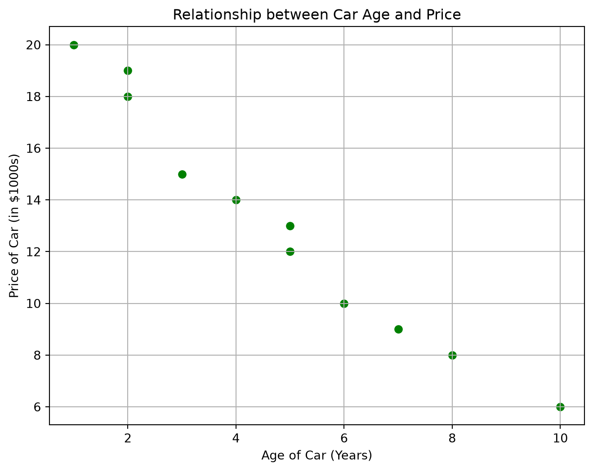
*(This code will display the scatter plot.)*
Description of Relationship:
Direction: The relationship is negative. As the age of the car increases, the price tends to decrease.
Form: The relationship appears to be fairly linear. The points seem to cluster around a straight line sloping downwards.
Strength: The relationship seems quite strong. The points are relatively close to the imaginary line one could draw through them.
Exercise: Calculate and Interpret Correlation
Using the car age and price data: car_age = [1, 2, 2, 3, 4, 5, 5, 6, 7, 8, 10]car_price = [20, 18, 19, 15, 14, 12, 13, 10, 9, 8, 6]
Calculate the Pearson’s correlation coefficient (r) for this data.
What does this value tell you about the linear relationship between the age of a car and its price?
Solution. Solution: Calculate and Interpret Correlation
Python Code:
import statisticscar_age = [1, 2, 2, 3, 4, 5, 5, 6, 7, 8, 10]# Ensure car_price has float values if any calculations require it,# though for correlation with lists of numbers, it's usually fine.car_price = [20.0, 18.0, 19.0, 15.0, 14.0, 12.0, 13.0, 10.0, 9.0, 8.0, 6.0]iflen(car_age) ==len(car_price) andlen(car_age) >=2: correlation_cars = statistics.correlation(car_age, car_price)print(f"Correlation coefficient for car age and price (r): {correlation_cars:.3f}")else:print("Data lists must be of equal length and have at least two points.")
Correlation coefficient for car age and price (r): -0.982
**Output:**
```
Correlation coefficient for car age and price (r): -0.980
```
Interpretation: The correlation coefficient r = -0.980 indicates a very strong negative linear relationship between the age of a car and its price.
Strong: The value is very close to -1.
Negative: As the age of the car increases, the price tends to decrease linearly. This numerical result strongly supports our visual interpretation of the scatter plot.
Here are a few more comprehensive exercises to help you practice the concepts from this chapter.
TipExercise
Comprehensive Student Data Exploration
A small group of students reported the following data:
Identify each variable as either categorical or quantitative.
For the ‘Major’ variable:
Create a frequency table.
Create a bar graph to visualize the frequencies.
For the ‘ExamScore’ variable:
Calculate the mean, median, and standard deviation.
Calculate Q1, Q3, and the IQR.
Create a histogram with a suitable number of bins. Describe its shape.
Create a box plot. Are there any potential outliers according to the 1.5xIQR rule?
Create a scatter plot to visualize the relationship between ‘StudyHoursPerWeek’ and ‘ExamScore’.
Calculate the Pearson’s correlation coefficient between these two variables.
Describe the relationship (direction, form, strength).
NoteSolution
Solution: Comprehensive Student Data Exploration
import matplotlib.pyplot as pltimport statistics# Datanames = ['Liam', 'Olivia', 'Noah', 'Emma', 'Oliver', 'Ava', 'Elijah', 'Sophia']majors = ['CompSci', 'Biology', 'CompSci', 'English', 'Biology', 'CompSci', 'Math', 'English']study_hours = [15, 20, 12, 18, 22, 10, 25, 16]exam_scores = [85, 92, 78, 88, 95, 75, 98, 82]projects_completed = [3, 4, 2, 3, 5, 2, 6, 4]# 1. Identify variable typesprint("1. Variable Types:")print("- Name: Categorical (Nominal)")print("- Major: Categorical (Nominal)")print("- StudyHoursPerWeek: Quantitative (Discrete or Continuous depending on measurement precision)")print("- ExamScore: Quantitative (Discrete or Continuous)")print("- ProjectsCompleted: Quantitative (Discrete)")print("-"*30)# 2. 'Major' variable analysisprint("\n2. Analysis of 'Major':")# Count how many students have each major (a frequency table), using the# list.count() method we saw earlier in this chaptermajor_names = ['CompSci', 'Biology', 'English', 'Math']major_counts = [majors.count('CompSci'), majors.count('Biology'), majors.count('English'), majors.count('Math')]print("Frequency Table for Major:")print(f"- CompSci: {majors.count('CompSci')}")print(f"- Biology: {majors.count('Biology')}")print(f"- English: {majors.count('English')}")print(f"- Math: {majors.count('Math')}")# Bar graph for Majorplt.figure(figsize=(7, 5))plt.bar(major_names, major_counts, color=['skyblue', 'lightgreen', 'salmon', 'gold'])plt.title("Frequency of Student Majors")plt.xlabel("Major")plt.ylabel("Number of Students")plt.show()print("-"*30)# 3. 'ExamScore' variable analysisprint("\n3. Analysis of 'ExamScore':")mean_score = statistics.mean(exam_scores)median_score = statistics.median(exam_scores)stdev_score = statistics.stdev(exam_scores)print(f"Mean Exam Score: {mean_score:.2f}")print(f"Median Exam Score: {median_score:.2f}")print(f"Standard Deviation of Exam Scores: {stdev_score:.2f}")exam_scores_sorted =sorted(exam_scores)q_scores = statistics.quantiles(exam_scores_sorted, n=4)q1_score = q_scores[0]q3_score = q_scores[2]iqr_score = q3_score - q1_scoreprint(f"Q1 Exam Score: {q1_score:.2f}")print(f"Q3 Exam Score: {q3_score:.2f}")print(f"IQR of Exam Scores: {iqr_score:.2f}")# Histogram for ExamScoreplt.figure(figsize=(8, 6))plt.hist(exam_scores, bins=5, color='lightblue', edgecolor='black')plt.title("Distribution of Exam Scores")plt.xlabel("Exam Score")plt.ylabel("Frequency")plt.show()print("Histogram Shape: The histogram appears roughly symmetric, possibly slightly left-skewed as higher scores are more frequent.")# Box plot for ExamScoreplt.figure(figsize=(6, 7))plt.boxplot(exam_scores, vert=True, patch_artist=True)plt.title("Box Plot of Exam Scores")plt.ylabel("Exam Score")plt.xticks([1], ['Scores'])plt.show()# Check for outliers using the 1.5xIQR rule by comparing the smallest and# largest scores to the fenceslower_fence = q1_score -1.5* iqr_scoreupper_fence = q3_score +1.5* iqr_scorelowest_score =min(exam_scores)highest_score =max(exam_scores)if lowest_score < lower_fence or highest_score > upper_fence:print("There are potential outliers based on the 1.5xIQR rule.")else:print("No potential outliers detected by the 1.5xIQR rule.")print("-"*30)# 4. Relationship between 'StudyHoursPerWeek' and 'ExamScore'print("\n4. Relationship between Study Hours and Exam Score:")plt.figure(figsize=(8, 6))plt.scatter(study_hours, exam_scores, color='purple')plt.title("Study Hours vs. Exam Score")plt.xlabel("Study Hours Per Week")plt.ylabel("Exam Score")plt.grid(True)plt.show()correlation_study_score = statistics.correlation(study_hours, exam_scores)print(f"Correlation between Study Hours and Exam Score: {correlation_study_score:.3f}")print("Relationship Description:")print("- Direction: Positive (as study hours increase, exam scores tend to increase).")print("- Form: Appears to be roughly linear.")print("- Strength: Quite strong, as the points cluster fairly closely around an upward trend.")print(f"The correlation coefficient of {correlation_study_score:.3f} supports a strong positive linear relationship.")
1. Variable Types:
- Name: Categorical (Nominal)
- Major: Categorical (Nominal)
- StudyHoursPerWeek: Quantitative (Discrete or Continuous depending on measurement precision)
- ExamScore: Quantitative (Discrete or Continuous)
- ProjectsCompleted: Quantitative (Discrete)
------------------------------
2. Analysis of 'Major':
Frequency Table for Major:
- CompSci: 3
- Biology: 2
- English: 2
- Math: 1
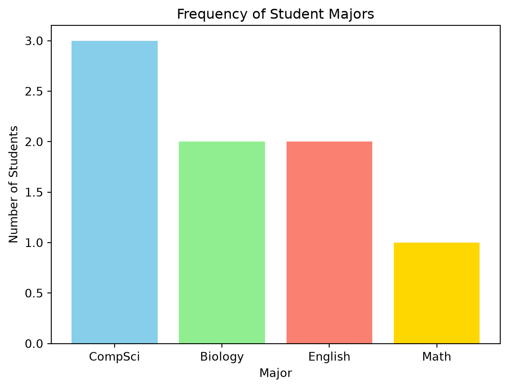
------------------------------
3. Analysis of 'ExamScore':
Mean Exam Score: 86.62
Median Exam Score: 86.50
Standard Deviation of Exam Scores: 8.14
Q1 Exam Score: 79.00
Q3 Exam Score: 94.25
IQR of Exam Scores: 15.25
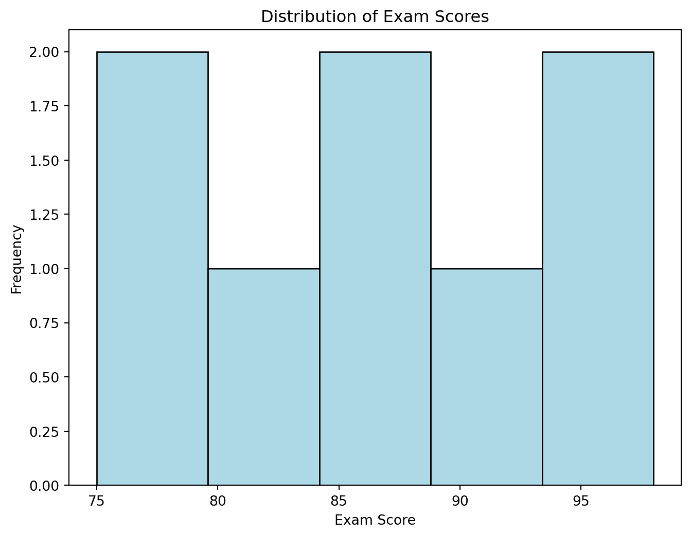
Histogram Shape: The histogram appears roughly symmetric, possibly slightly left-skewed as higher scores are more frequent.
/tmp/ipykernel_2796/3181809601.py:76: MatplotlibDeprecationWarning: vert: bool was deprecated in Matplotlib 3.11 and will be removed in 3.13. Use orientation: {'vertical', 'horizontal'} instead.
plt.boxplot(exam_scores, vert=True, patch_artist=True)
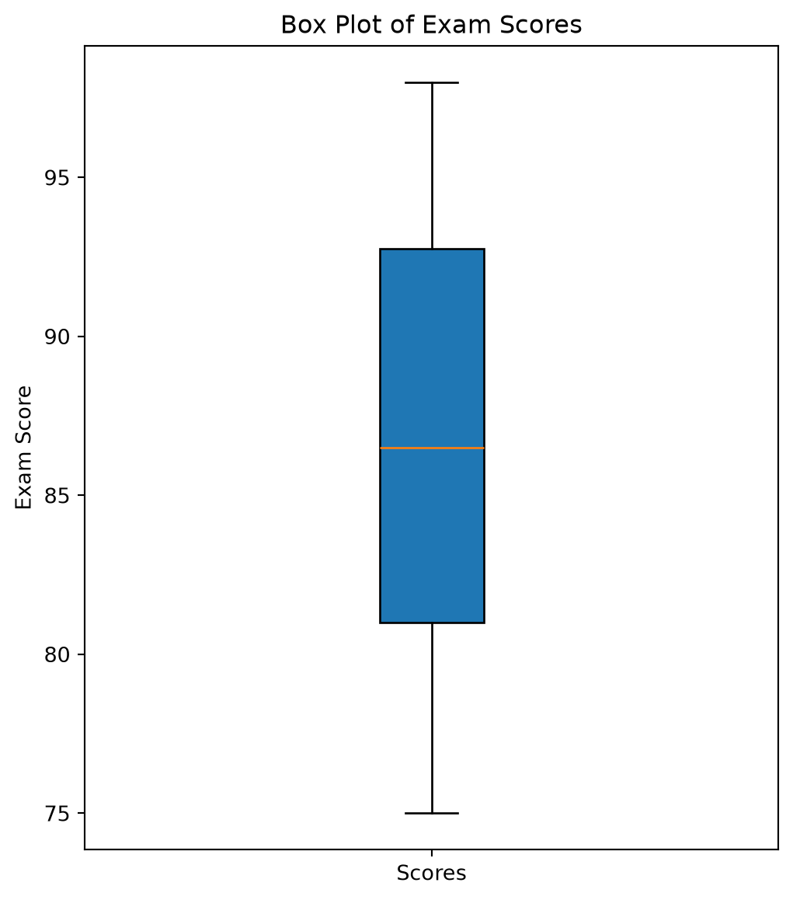
No potential outliers detected by the 1.5xIQR rule.
------------------------------
4. Relationship between Study Hours and Exam Score:
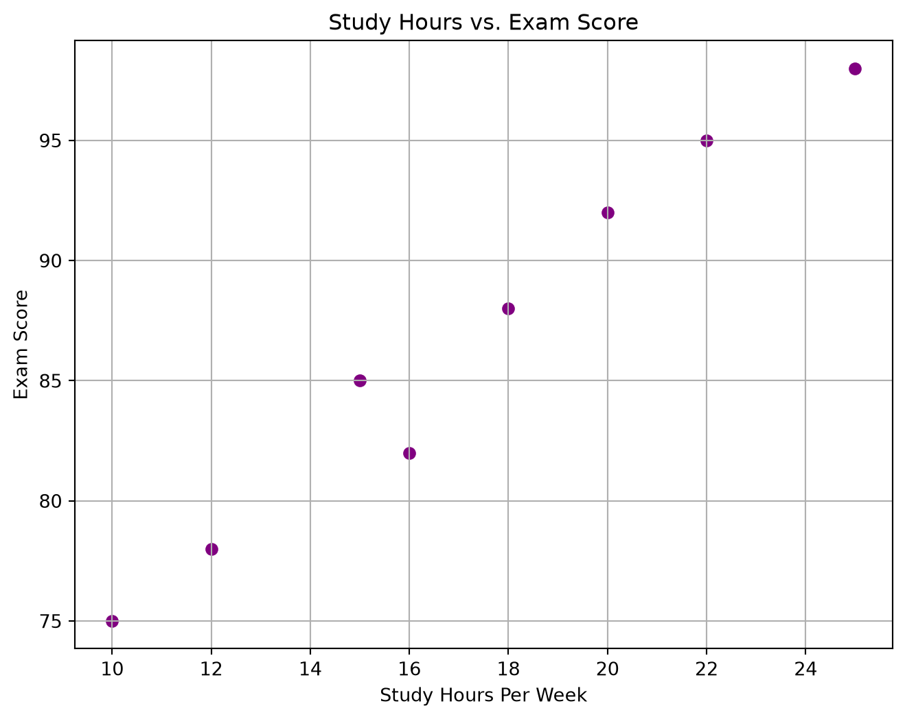
Correlation between Study Hours and Exam Score: 0.985
Relationship Description:
- Direction: Positive (as study hours increase, exam scores tend to increase).
- Form: Appears to be roughly linear.
- Strength: Quite strong, as the points cluster fairly closely around an upward trend.
The correlation coefficient of 0.985 supports a strong positive linear relationship.
TipExercise
Interpreting Skewness and Variability
Two different cities tracked their daily rainfall (in mm) for a month. * City A: Mean rainfall = 10 mm, Median rainfall = 8 mm, Standard deviation = 3 mm. * City B: Mean rainfall = 10 mm, Median rainfall = 12 mm, Standard deviation = 7 mm.
For each city, what can you infer about the likely shape (skewness) of its rainfall distribution? Explain your reasoning.
Which city experienced more variability in daily rainfall? Explain.
Sketch a possible histogram shape for each city that would be consistent with these statistics. (You don’t need to use Python for the sketch, just describe or draw it simply).
NoteSolution
Solution: Interpreting Skewness and Variability
Shape (Skewness) of Rainfall Distribution:
City A:
Mean (10 mm) > Median (8 mm).
When the mean is greater than the median, the distribution is typically right-skewed (positively skewed). This means there are likely some days with unusually high rainfall pulling the mean up, while most days have lower rainfall amounts clustering around the median.
City B:
Mean (10 mm) < Median (12 mm).
When the mean is less than the median, the distribution is typically left-skewed (negatively skewed). This suggests there might be some days with very low rainfall (or many days with moderately high rainfall and a few with very low rainfall dragging the mean down), with the bulk of the data points being on the higher side of the mean.
Variability in Daily Rainfall:
City B experienced more variability.
The standard deviation is a measure of spread or variability. City B has a standard deviation of 7 mm, which is larger than City A’s standard deviation of 3 mm. This indicates that the daily rainfall amounts in City B were more spread out from their average, while in City A they were more tightly clustered around the average.
Sketching Possible Histogram Shapes:
City A (Right-Skewed): Imagine a histogram where the peak is on the left side (around 8 mm), and a tail extends out to the right. The bars would be taller on the left and gradually get shorter towards the right, with potentially a few small bars at higher rainfall values representing the outliers that pull the mean to 10 mm.
City B (Left-Skewed): Imagine a histogram where the peak is on the right side (around 12 mm), and a tail extends out to the left. The bars would be taller on the right and gradually get shorter towards the left. The spread would also be wider overall due to the larger standard deviation.